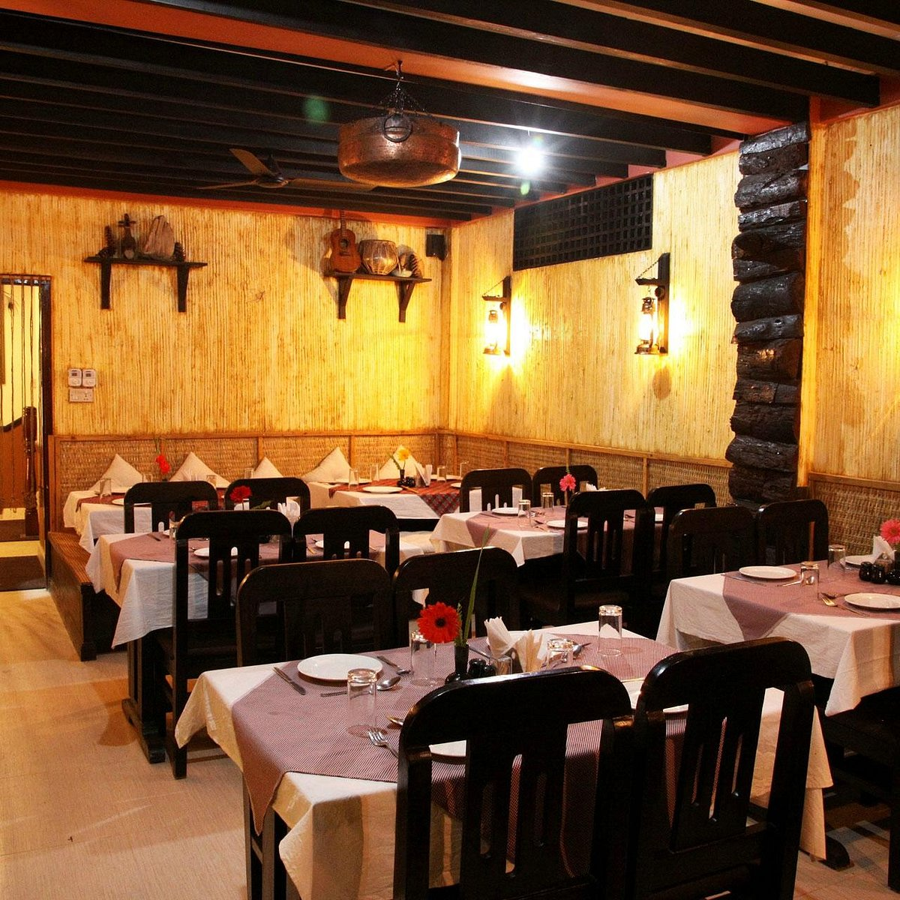
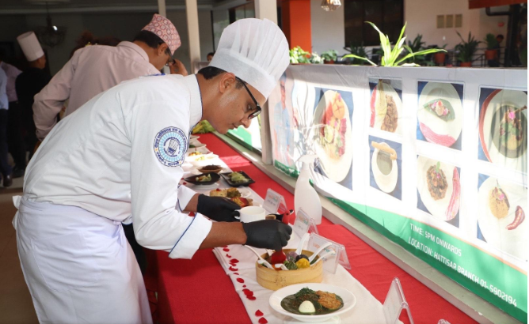
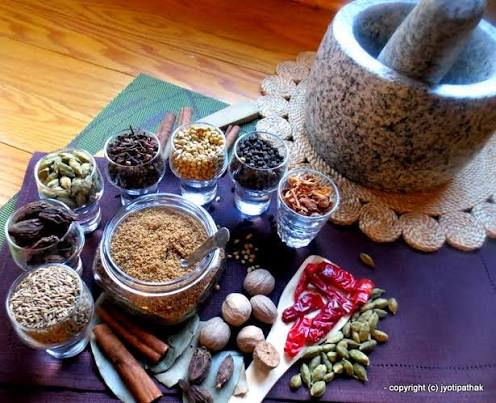
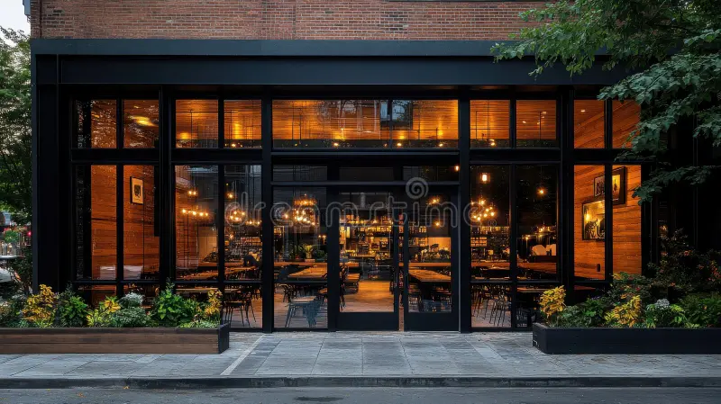

From the heart of the Himalayas to your table

Himalayan Kitchen started as a small family kitchen with one goal: bring authentic Nepali and Indian flavors to people who might never get the chance to travel to the Himalayas themselves. Every dish is made the way it's made back home — slow-cooked spices, hand-folded momos, and recipes passed down through generations.

Our head chef brings over 15 years of experience cooking traditional Nepali and North Indian cuisine, trained in kitchens across Kathmandu before bringing that expertise here. Every recipe on our menu is either a family recipe or one perfected over years of practice — nothing is shortcutted, nothing is store-bought.

We source spices directly tied to Himalayan and North Indian traditions, and prepare everything fresh daily — no pre-made sauces, no shortcuts. From our dal to our momos, every dish is made in-house, the same day it's served.

123 Everest Lane, Jackson Heights, NY 11372
Open Tuesday–Sunday, 11:00 AM – 10:00 PM
Closed Mondays